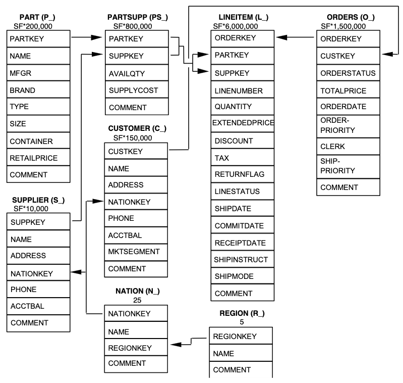

Apache Spark
A good reference source on Spark is the book by @SparkGuide, which is available for free online through the CMU Library.
Apache Spark builds on MapReduce ideas (?@sec-distributed-data) in a more flexible way.
Here’s the idea. Your dataset (a great big data frame, for example) is immutable. There are many ways you can operate upon it, all of which produce a new dataset. For example, you could
- map: apply a function to every row
- filter: only keep the rows for which a function returns true
- sample: randomly select a subset of rows
- group by: if each row is a key and a value, produce a new dataset of (key, list of all the values) pairs
and so on. Spark has a bunch of built-in transformation functions, including these and many more.
When you load a dataset into Spark, different parts of it are loaded into memory on each machine in the cluster. When you apply a transformation to the data, each machine transforms its own chunk of the data.
Well, hang on. Each machine doesn’t transform its data; Spark just makes a note of the transformation you made. You can do a whole sequence of transformations and Spark will only start the distributed calculations when you perform an action, like
- show: print out a formatted version of the result (kind of like psql’s printed tables of results)
- collect: return the entire result as a big array or data frame
- reduce: apply a reduction function to the data
- take: take the first \(n\) rows of data
- save: save the dataset to a file
and so on.
You can chain together these operations: you can map, then filter, then sample, then group, then reduce, with whatever operations you want.
Because the calculation is only actually done when you perform an action, like collecting the results, Spark builds up a representation of the entire operation you want to perform. It knows you’re filtering the data, then grouping, then transforming, then grouping again, and so on—and just like a SQL database, it can figure out the best way to execute those operations. It can figure out how to distribute them onto different nodes, perhaps how to rearrange or combine operations to avoid redundant work, and so on.
Connecting to the Spark workspace
Spark is best run on a cluster of multiple machines. The extra work to distribute data and computations is wasted if the computation is done on a single computer—so if your data fits on your laptop, it may be more efficient to do the work in Python than to install Spark. But when the data is huge, Spark becomes necessary.
We’ve set up a cluster on Microsoft Azure. This uses Azure Databricks, a product that integrates Spark with online notebooks, data management, job scheduling, and many other features designed for teams working with lots of data sources at a large company.
A link to our Databricks workspace is posted on Canvas.
Your Workspace contains notebooks, queries, files, and other Databricks-specific features like dashboards. Computation, such as when you run code in a notebook, is run on a cluster of Azure virtual machines that we rent (see ?@sec-cloud).
The Spark architecture
Base Spark
Spark’s architecture is rather different from what we are used to with relational databases (?@sec-database-fundamentals). In relational databases, we had a client-server architecture: the server software, such as PostgreSQL, ran on a machine and managed all the data. Clients, such as our Python scripts, could connect to the server and send queries; the server then processed the queries, figured out the appropriate response, and sent it back to the client. Many clients could be connected at once.
This is not how Spark works. Spark is designed to run on clusters of multiple machines, and it is designed to run applications: programs that run on the cluster, managed by Spark, and do tasks. There are several moving parts:
- A cluster manager. The cluster manager is software that has control over a collection of servers (nodes) on which Spark can be run. If we want to run a Spark application, we tell the cluster manager how many nodes we need and what resources (such as memory or disk) the application might use, and it will determine the appropriate nodes to run the application on.
- The Spark driver. The driver is part of your application. It knows the job you are trying to do and determines how to split up the tasks to run on different machines.
- The Spark executors. The executors run on the nodes assigned by the cluster manager, and do the work assigned to them by the Spark driver. If your application applies some calculation to a huge data frame, the driver will direct the executors to apply their part of the calculation to their assigned part of the data frame.
Spark is written in Scala, so applications can be written in Scala; but it also can work with Java, Python, and R. In each programming language there are extensive libraries of Spark operations, so when you write an application, it can use the various Spark features. When that application is submitted to a cluster manager to run, it creates a driver, the driver runs your application, and the driver delegates the work to the executors. Every user—every person who wants to run their own calculations—gets their own driver and executors.
This creates the key contrast. In relational databases, we ran a Python script on our computer—or any computer we liked—and it sent SQL queries to the database, got the results, and did whatever it wanted to do with them. In Spark, we send an application to the cluster, and the application runs on the cluster, not on our own computer.
Fortunately, Spark does provide a few convenient premade applications: the Spark shells. The PySpark shell, for instance, is an application that accepts Python commands and then runs them on the cluster, so you can interactively run code and see what happens.
In Databricks
In Databricks, all the Spark cluster details are managed for you. When you configure a Databricks cluster (which I have done for the class), Databricks automatically sets up a cluster manager, driver, and executors. Spark provides applications: their notebooks and other features run on Spark automatically.
Spark in Python
One Spark client is PySpark. Let’s start with an example derived from the PySpark documentation.
PySpark uses method names like appName(), groupBy(), and getOrCreate(), which violate the PEP 8 guidelines on function naming. This is because Spark is written in Scala, which often uses mixedCase names. You should always use PEP 8 conventions when writing your own code.
Creating a Spark application
From Python, we need an object representing a connection to Spark, much like we had an object representing PostgreSQL connections.
To do this, first we make a SparkSession. This is how our application communicates with the driver and sends work to the executor.
from pyspark.sql import SparkSession
spark = SparkSession \
.builder \
.appName("Python Spark SQL basic example") \
.getOrCreate()Now spark is an object we can use to ask Spark to do things. Then we write the rest of the application code in that Python script. Using a program called spark-submit, we can send the file to the cluster to be run by Spark.
Alternately, if we’re using a Databricks notebook or the PySpark shell, a SparkSession is automatically created for us and named spark. We do not need to run the code above. We can just type and run our code interactively.
Creating DataFrames
A DataFrame object is a table with named columns, much like data frames in R or Pandas. We can create them manually by providing a list of rows (as tuples) and a list of column names:
df = spark.createDataFrame([
("Yellow-billed duck", "Anas", "Undulata", 1839),
("Laysan duck", "Anas", "Laysanensis", 1892),
("Mallard", "Anas", "Platyrhynchos", 1758),
("Eurasian wigeon", "Mareca", "Penelope", 1758)
],
["Common name", "Genus", "Species", "Year"]
)Loading data
You probably won’t create most of your data frames by manually typing them into a script. Instead, the data already exists somewhere else: a data file, a SQL database, etc. You simply need Spark to load that data.
From files
We can ask Spark to create a DataFrame object from a data file; it understands a whole bunch of data formats:
ppl = spark.read.load("dbfs:/databricks-datasets/learning-spark-v2/people/people-10m.delta")Now ppl is a data frame. We can view the first few rows:
ppl.show()From catalogs
In Databricks, Spark is integrated with a “catalog” of data tables. This catalog is much like a PostgreSQL database, insofar as it contains a bunch of tables, and there can be complex permissions set up to control who has access to which tables.
In our case, the catalog is built on Apache Hive, and stores its data in distributed fashion on Azure’s cloud storage system.
There are sample data tables included with Databricks:
df = spark.read.table("samples.nyctaxi.trips")We’ll discuss the catalog in more detail in ?@sec-spark-catalog.
Operating on data
Our Python code can do transformations, like filter:
filtered = df.filter(df['fare_amount'] > 21)This creates a new DataFrame of the results.
Notice the magic happening here: if the data file were huge, this transformation is automatically distributed to all nodes in the cluster. But not now—later, when we try to use filtered, for example by writing filtered.show().
Since every operation returns a new DataFrame, we can write operations like
df.groupBy("pickup_zip").count()This returns a new DataFrame with columns pickup_zip and count. A lazy DataFrame, which is only calculated when we ask for it.
You can think of this as a way of building up a MapReduce job. You write the sequence of transformations you need—even for loops and whatever else you want—and at the end, when you request the result, Spark rearranges and distributes the work to the executors so it can be calculated even on a massive dataset.
You still have to figure out how to structure your operation as a series of transformations and reductions, but it’s a bigger set of transformations and reductions, and you can compose many small ones together instead of cramming the operation into one big Map and Reduce.
Finding available operations
Once we have a DataFrame, we can find the operations available to us in a few places:
- The DataFrame class documentation lists all the methods, such as
groupBy,filter,join, and so on. - The Spark SQL functions list gives functions that can be imported from
pyspark.sql.functionsand used inDataFrameoperations—things like mathematical operators, date functions, and other functions you might use in data manipulation (much like PostgreSQL’s built-in functions).
Manipulating DataFrames
Because we’re telling Spark what operations to perform, rather than performing themselves in our own code, we have to write operations in a way Spark understands. This requires some adjustment from what you’re used to with Pandas and other Python work.
Many of these operations come from pyspark.sql.functions, so it’s common to import that module, either entirely or just for specific functions:
# import entire module
import pyspark.sql.functions as F
# or import just a few functions you need
from pyspark.sql.functions import col, descIn the examples below, we’ll use the first approach and import the entire module as F.
You can find a full list of functions in the PySpark documentation.
Referring to columns
In Spark operations, we need some way to refer to specific columns. The col() function lets us identify columns by name as a string, e.g. F.col("foo") to refer to the foo column.
If you have a DataFrame named df, you can also use df.foo or df["foo"] to refer to columns in it. You will often see code using different ways to refer to columns. If you work at a company, they’ll probably have a standard style for Spark code and use one specific way to refer to columns.
Using any of these methods returns a Column object representing the column. These objects have some useful methods, such as alias(), for giving a column a new name, much like AS in SQL. For example, F.col("foo").alias("foo2") is like SELECT foo AS foo2.
Spark expressions
In programming languages, expressions are operations that yield a value, such as 2 + 2 or ("foo", "bar") (whose value is a tuple containing two strings). In many Spark operations, we’ll want to write expressions that refer to entire columns, to describe how we’ll be modifying and combining columns.
The col() function returns a Column object, and Column objects overload many operators to turn them into Spark expressions. For example,
# represents adding 2 to every value
F.col("foo") + 2
# represents adding two columns together
F.col("foo") + F.col("bar")Spark achieves this by overloading the basic Python operators like + and *, so instead of doing literal multiplication, they create objects representing the Spark operations being done. This means that you cannot use ordinary Python functions to operate in expressions, but have to use the Spark equivalents:
import math
# doesn't work
math.sqrt(F.col("foo"))
# works
F.sqrt(F.col("foo"))Logical combinations of expressions must be expressed using the |, &, and ~ operators, not the usual or, and, and not keywords in Python:
(F.col("foo") >= 18) & ~F.col("bar")Notice the extra parentheses in this expression. The |, &, and ~ operators have higher precedence than >= and other comparison operators, so without parentheses, the expression would be interpreted as F.col("foo") >= (18 & ~F.col("bar")), which is definitely not what we want. This is an unfortunate consequence of PySpark’s operator overloading approach.
We can use other Column methods in expressions to obtain useful results. For example, maybe we want to make a new column whose value depends on the value of another:
F.when(F.col("trip_distance") >= 10, "Long").otherwise("Short")Many PySpark functions accept a string column name as well as a column expression. (The type is listed as ColumnOrName in the documentation.) For example, we can write this both ways:
F.sqrt(F.col("foo"))
F.sqrt("foo")But to take the square root of the sum of two columns, we should use an expression:
F.sqrt(F.col("foo") + F.col("bar"))You can also use the expr() function to write expressions as strings that Spark will parse and convert into equivalent form. These are identical to the earlier examples:
F.expr("foo + 2")
F.expr("foo + bar")
F.expr("sqrt(foo)")
F.expr("sqrt(foo + bar)")These functions all return Column objects, so you can do any of the Column operations on them, such as setting an alias.
Selecting and adding columns
Much of what you do with Spark DataFrames will be selecting specific columns and doing calculations with them to make new DataFrames. In SQL, that’s the role of SELECT, which can select columns but also make new ones by combining existing ones; in dplyr, that’s the role of select() and mutate().
The select() method on DataFrame objects is similar. It takes multiple arguments, one for each column, and the columns can be expressions giving calculations. For example, building on our examples so far, we can write:
df.select(F.col("foo"), F.col("bar"), F.col("foo") + F.col("bar"),
F.sqrt(F.col("foo")))The selectExpr() method does the same, but with expression strings:
df.selectExpr("foo", "bar", "foo + bar", "sqrt(foo)")We can also create new columns using the withColumn() method, in which we provide the column name and value:
df.withColumn("fooBarSum", F.col("foo") + F.col("bar"))This returns a new data frame with the additional column. If you need to calculate and add many new columns, use withColumns(), which takes a dictionary mapping column names to values.
Filtering
To filter a DataFrame’s rows, we need an expression whose result has as many rows as the DataFrame, and whose values are either true or false. Rows with a True value will be kept.
DataFrames have filter() and where() methods to do the filtering; these are identical, and the two names are provided just because both names are commonly used in different languages. Both take an argument that is the expression to use for filtering. For example:
df.filter(F.col("foo") > 10)
# equivalently:
df.filter("foo > 10")Part of Spark’s optimization process is to analyze the filters in an operation and group them together, so the data is filtered before any more expensive operations are done. This means that chaining multiple filters is fine, since Spark will do them at once:
df.filter("foo > 10") \
.filter("bar < 4") \
.filter("sqrt(score) != 7")Sorting
To order a DataFrame’s rows, we use its orderBy() method. This accepts one or more column names to sort by. As with every Spark feature so far, there’s more than one way to do it:
# using desc() to specify the direction
df.orderBy(F.desc("trip_distance"))
# referring to bare column name
df.orderBy("trip_distance", ascending=False)
# using a Column object
df.orderBy(df.trip_distance, ascending=False)We can specify multiple columns to sort on, so later columns will be used to break ties in the earlier columns:
df.orderBy(F.desc("trip_distance"), F.asc("fare_amount"))Exercise 1 (Simple selections and filters) Load the sample taxi data in a Databricks notebook:
df = spark.read.table("samples.nyctaxi.trips")Using this data frame,
- Select all the rows with a distance greater than 15 in with pickup in ZIP code 11422.
- Calculate a new column representing the fare amount per unit distance. Call this column
fare_rate. - Output (with
show()) a data frame containing only the trip distance, fare rate, and dropoff ZIP. Sort it by fare rate in descending order.
Your answers will build on each other to produce one expression that does the whole thing.
Solution.
# 1
df.filter("trip_distance > 15").filter("pickup_zip = 11422")
# 2
df.filter("trip_distance > 15") \
.filter("pickup_zip = 11422") \
.withColumn("fare_rate", F.col("fare_amount") / F.col("trip_distance"))
# 3
df.filter("trip_distance > 15") \
.filter("pickup_zip = 11422") \
.withColumn("fare_rate", F.col("fare_amount") / F.col("trip_distance")) \
.select("trip_distance", "fare_rate", "dropoff_zip") \
.orderBy(F.desc("fare_rate")) \
.show()Grouping and aggregating
Ordinary grouping
The DataFrame class has a groupBy() method to group data frames, much like GROUP BY in SQL or group_by() in dplyr. This takes the columns to group by as arguments:
df.groupBy("foo")
# group by both columns, so there is one group per combination
df.groupBy("foo", "bar")(Notice here we have used string column names, since groupBy() says it accepts arguments of type ColumnOrName. We could also use col().)
The result of groupBy() is a GroupedData object. This is a different object with different methods. The method you’re most likely to want is agg(), which does aggregation. Just like select(), it takes as many arguments as you want columns, each argument can be a different column expression. The expressions can use any of Spark’s built-in aggregate functions.
For example:
df.groupBy("foo") \
.agg(F.min(F.col("score")).alias("min_score"),
F.max(F.col("score")).alias("max_score"))It also takes a dictionary argument. If given a dictionary, the keys should be column names, and the values should be strings naming the aggregate function to use:
df.groupBy("foo") \
.agg({"score": "min", "latency": "max"})In this form, you can only do one aggregate function per column, since dictionaries can only contain each key once.
Example 1 (Operating on the events data) We’ve loaded our events data (from ?@sec-example-db) into Databricks. Let’s load it:
events = spark.read.table("hive_metastore.default.events")Now we can begin Spark operations. For example, to get the average score per student:
# a Spark GroupedData object
persona_scores = events.groupBy("persona")
persona_scores.avg("score")(GroupedData objects have several methods for common aggregate functions, like avg().)
Notice that Spark does not display the data frame—that’s because it hasn’t done the calculation yet! We can use .show() to have it print it out, or .collect() to return the results as a Python variable we can work with.
Each operation returns a DataFrame that we can conduct further operations on, by chaining operations in sequence. For example, let’s try reproducing a query from ?@sec-grouping-aggregate:
select persona, avg(score) as mean_score
from events
where moment > cast('2014-10-01 11:00:00' as timestamp)
group by persona
having avg(score) > 300
order by mean_score desc;In Spark, we write the same operations in logical order:
import pyspark.sql.functions as F
from datetime import datetime
top_scores = events \
.filter(F.col("moment") > datetime(2014, 10, 1, 11)) \
.groupBy("persona") \
.agg(F.avg(F.col("score")).alias("mean_score")) \
.filter(F.col("mean_score") > 300) \
.orderBy(F.desc("mean_score"))But when we ask for the results (with .show(), .take(), .collect(), or similar), it analyzes the operations to determine the most efficient way to execute them, and only then does it perform the calculations.
Just like in SQL, we can also ask Spark to explain how it will run these operations on the cluster:
top_scores.explain()Exercise 2 (Querying the events table) Load the events table into a Spark DataFrame as shown in Example 1. Write DataFrame operations to do the operations in ?@exr-basic-grouping. (By “DataFrame operations” I mean you should use Python methods like in Example 1, and not Spark SQL.)
For #4, see the datetime functions provided in pyspark.sql.functions.
Solution. We can write the following Spark operations:
from pyspark.sql import functions as F
# 1
events.groupBy("persona") \
.agg({"latency": "max", "score": "avg"}) \
.filter(F.col("max(latency)") > 565) \
.orderBy(F.col("avg(score)")) \
.show()
# 2
events.groupBy("persona") \
.avg("score") \
.filter(F.col("avg(score)") > 600) \
.show()
# 3
events.groupBy("element") \
.count() \
.show()
# 4. note that .min() only works on numeric columns, while .agg can apply min()
# to other column types
events.groupBy("persona") \
.agg({"moment": "min"}) \
.select([F.col("persona"), F.date_format(F.col("min(moment)"), "MMMM d")]) \
.show()Exercise 3 (Taxi aggregates) Using the taxi data from Exercise 1, produce a data frame giving the following summary statistics for each pickup ZIP code:
- The average fare rate (as defined in Exercise 1)
- The total number of trips from that ZIP (see the
count()aggregate function) - The minimum and maximum distance traveled
Give each column an appropriate name. Order the result by descending number of trips.
Solution.
df = spark.read.table("samples.nyctaxi.trips")
df.withColumn("fare_rate", F.col("fare_amount") / F.col("trip_distance")) \
.groupBy("pickup_zip") \
.agg(F.avg("fare_rate").alias("avg_fare_rate"),
F.min("trip_distance").alias("min_distance"),
F.max("trip_distance").alias("max_distance"),
F.count("fare_rate").alias("num_trips")) \
.orderBy(F.desc("num_trips")) \
.show()Rollups
Grouping is conceptually simple: If you group by the columns (a, b, c), the groups are defined by all unique combinations of those three columns.
But sometimes we’d like to calculate aggregates for groups, while also providing overall totals. The output table would hence have one row per unique combination, plus one or more summary rows. This is a rollup.
Rollups can be defined with the rollup() method on DataFrames. This creates a GroupedData object that supports all the same aggregation you can do after groupBy().
Example 2 (Score rollup) Returning to the events data loaded in Example 1, let’s get the average score per element, but with a rollup:
events \
.rollup("element") \
.agg(F.avg(F.col("score")).alias("mean_score")) \
.orderBy("element")Notice the row with a NULL for element. This row represents the mean score for all rows in the events table.
Just as you can group by multiple columns, you can rollup across multiple columns. The result is hierarchical: If you rollup by (a, b, c) and aggregate, you get
- one row per unique combination of
(a, b, c), - one row per unique combination of
(a, b), averaging over allc, - one row per unique value of
a, averaging over allbandc, - one row averaging over all data.
The columns being averaged over are always represented with NULL. To prevent confusing problems, ensure that the columns you rollup over do not already contain NULL values, or filter them out first.
Exercise 4 (Roll up the taxis) Return to the taxi data from Exercise 1. Produce a table calculating average fares for every (pickup, dropoff) ZIP code pair, for every pickup ZIP code, and overall.
Solution.
df = spark.read.table("samples.nyctaxi.trips")
df \
.rollup("pickup_zip", "dropoff_zip") \
.agg(F.avg("fare_amount").alias("mean_fare")) \
.orderBy("pickup_zip", "dropoff_zip")Cubes
We can take rollups a step further with cubes. Cubes are not hierarchical: if you make a cube of (a, b, c), you get aggregates over every subset:
(a, b, c)(a, b)(b, c)(a, c)abc- overall
The cube() method of DataFrame objects does this, and you can use aggregate functions as usual.
Exercise 5 (Cube the taxis) Repeat Exercise 4, but obtain average fares for every pickup ZIP, every dropoff ZIP, and every combination of them. Order by average fare in descending order. Which ZIPs or combinations have the highest average fares?
Solution.
df \
.cube("pickup_zip", "dropoff_zip") \
.agg(F.avg("fare_amount").alias("mean_fare")) \
.orderBy(F.desc("mean_fare"))Note that all the highest fares come from ZIPs or combinations with only one trip.
Joining
DataFrame objects have a join() method that supports the usual joins from SQL (?@sec-joins). For example, if we have two data frames df1 and df2, we can write a join like so:
df1.join(df2, df1.event_id == df2.id, how="left")Recall that df1.event_id is a way to refer to the event_id column on the df1 DataFrame, so it is a Column object; setting two Column objects equal to each other produces an object representing the join condition we are requiring. This is similar to ON in a SQL query. We can get left joins, right joins, inner joins, outer joins, and other combinations with the how argument.
The join() method returns a DataFrame representing the joined tables, so doing multiple joins simply requires calling the join() method repeatedly.
Example 3 (Joining in TPC-H) The Transaction Processing Performance Council builds benchmarks to measure how fast different database systems are. One of their sample datasets is TPC-H, which simulates an order and inventory management system. The database contains a number of parts that can be provided by various suppliers; there are many customers who can submit orders, each order consisting of multiple parts, potentially from several suppliers. This data is split across eight tables in the samples.tpch schema:

lineitem columns begin with l_. Arrows represent foreign keys. Here SF = 5, so there are 30 million line items and 50,000 suppliers.Suppose we’d like to find all the suppliers for parts in order #13710944. We need to find all the line items in that order (lineitem), join them with part suppliers (partsupp), and join those with suppliers (supplier). Then let’s pull out the part identifier (partkey), name of the supplier (s_name), and the available quantity (ps_availqty) for that part.
We begin by getting all the tables:
lineitem = spark.read.table("samples.tpch.lineitem")
partsupp = spark.read.table("samples.tpch.partsupp")
supplier = spark.read.table("samples.tpch.supplier")First we must filter lineitem to get the order we want. Then we must do the joins. Notice how we can set multiple join conditions by providing them as a list.
lineitem \
.filter(F.col("l_orderkey") == 13710944) \
.join(partsupp, [lineitem.l_partkey == partsupp.ps_partkey,
lineitem.l_suppkey == partsupp.ps_suppkey],
how="left") \
.join(supplier, supplier.s_suppkey == partsupp.ps_suppkey) \
.select("l_partkey", "s_name", "ps_availqty")Exercise 6 (Joining harder in TPC-H)
- Produce a table with one row per customer. For each customer, calculate their total expenditure (sum of the price of all orders they have submitted), the total number of line items ordered, and the total number of orders. Ensure the table includes customers who have never made any orders.
- Produce a table with one row per supplier. For each supplier, report their name and the total number of parts they have supplied to meet orders (meaning the sum of the
quantityof their parts across all orders). - Produce a summary table giving pricing information for all items shipped up to June 1, 1998 (
l_shipdate). There should be one row per return flag and line status (l_returnflagandl_linestatus); each row should give:- the number of line items with this status/return flag
- the total quantity of line items shipped
- the average quantity of items per order
- their total base price (
l_extendedprice) - their total discounted price (
l_extendedprice * (1 - l_discount))
Solution.
# 1
orders = spark.read.table("samples.tpch.orders")
lineitem = spark.read.table("samples.tpch.lineitem")
# TODO Fix to include customers who haven't made orders
orders \
.join(lineitem, orders.o_orderkey == lineitem.l_orderkey) \
.groupBy("o_custkey") \
.agg(F.sum("o_totalprice").alias("total_spend"),
F.count("l_linenumber").alias("total_num_items"),
F.count_distinct("o_orderkey").alias("num_orders")) \
.orderBy("o_custkey") \
.show()
# 2
partsupp = spark.read.table("samples.tpch.partsupp")
lineitem \
.join(partsupp, [partsupp.ps_partkey == lineitem.l_partkey,
partsupp.ps_suppkey == lineitem.l_suppkey],
how="left") \
.groupBy("l_suppkey") \
.agg(F.sum("l_quantity").alias("total_quantity")) \
.join(supplier, lineitem.l_suppkey == supplier.s_suppkey) \
.select("s_suppkey", "s_name", "total_quantity") \
.show()
# 3
# Inspired by https://www.tpc.org/TPC_Documents_Current_Versions/pdf/TPC-H_v3.0.1.pdf
# section 2.4.1
from datetime import date
lineitem \
.filter(F.col("l_shipdate") < date(1998, 6, 1)) \
.groupBy("l_returnflag", "l_linestatus") \
.agg(F.count("l_linenumber").alias("total_items"),
F.sum("l_quantity").alias("quantity_shipped"),
(F.sum("l_quantity") / F.count_distinct("l_orderkey")).alias("avg_per_order"),
F.sum("l_extendedprice").alias("total_base_price"),
F.sum(F.expr("l_extendedprice * (1 - l_discount)")).alias("total_discounted_price")) \
.show()Window functions
In SQL, we learned about window functions (?@sec-sql-window), which allow us to perform aggregation without summarizing the data to get one row per group. Instead, we can select data and augment it with columns that calculate aggregates or relate the row to others in a group.
In grouping, we use groupBy to define the groups. In windowing, we have to define which rows will be included in the window for any particular row. For example, in ?@sec-sql-window we wrote the following query of the events table:
SELECT
id, persona, element, score, moment,
((score - avg(score) OVER (PARTITION BY persona ORDER BY moment)) /
stddev_samp(score) OVER (PARTITION BY persona ORDER BY moment)) AS z_score
FROM events
LIMIT 10;Here, the window “around” each row consists of all rows with the same persona (PARTITION BY persona). But the window only considers those rows occurring before this one (ORDER BY moment).
In Spark, we need a way to specify this. A special Window class lets us configure the window to use:
from pyspark.sql.window import Window
window_spec = Window \
.partitionBy("persona") \
.orderBy(F.asc("moment")) \
.rowsBetween(Window.unboundedPreceding, Window.currentRow)Here rowsBetween() specifies which rows of the window count: here, from the first row in the window to the current row. We can also use rangeBetween, which specifies the values to include in the window: .rangeBetween(-120, -1) means to include all rows whose ordering column value is between 120 and 1 unit less than this row. If moment were measured in seconds, this would give us a window of all events between 120 and 1 second before this row’s event, regardless of how many events that is. Meanwhile, rowsBetween(-120, -1) would give us all rows from 120 before to 1 before this one (in time), regardless of their absolute times.
Now, any Column object—such as the output of any aggregate function—has an over() method that lets us specify the window to use. So to replicate the SQL query above, we write:
events = spark.read.table("hive_metastore.default.events")
events.select(
F.col("id"), F.col("persona"), F.col("element"), F.col("score"), F.col("moment"),
((F.col("score") - F.avg("score").over(window_spec)) /
F.stddev_samp("score").over(window_spec)).alias("z_score")
)Exercise 7 (Are windows inclusive?) The rowsBetween() method of the Window class lets us specify which rows are included in the window. Above, we chose the range (Window.unboundedPreceding, Window.currentRow).
Is this inclusive or exclusive? That is, is the current row included in the window?
Create a test data frame (using spark.createDataFrame()) that would let you test this, define a window, and query the data frame. Interpret your result: is it inclusive or exclusive?
Solution. TODO Yes, they’re inclusive.
Spark SQL
You might have noticed that the basic Spark operations, like maps, grouping, and aggregation, sound a lot like the kinds of things you can do in SQL. That’s not a coincidence: the relational model of operations on tables still holds up after all these years.
As a bonus, Spark understands SQL syntax. You can run operations on data stored in catalogs:
sqlDF = spark.sql("""
SELECT persona, avg(score)
FROM hive_metastore.default.events
GROUP BY persona""")
sqlDF.show()sqlDF is just another DataFrame, and so .show() prints it out. Because it’s just a DataFrame, we could also do additional operations on it in Python (like filter(), avg(), or any of the other methods we’ve used), and the entire sequence of operations will only be done when we perform an action like show().
There are Spark SQL functions for math, logic, dates, and other common needs (just like SQL), as well as aggregate functions and window functions. You can JOIN multiple tables just as in SQL. There are also Spark-specific extensions to give Spark hints about the most efficient way to execute a query. To find the syntax definition and list of built-in functions, see the Spark SQL reference.
If you have a DataFrame in Python and want to access it using SQL, regardless of whether it’s already in a catalog, you can do that too:
# Register the DataFrame as a SQL temporary view
some_dataframe.createOrReplaceTempView("some_data")The createOrReplaceTempView() method we used above creates what Spark calls a temporary view: it lets us see the data already in a DataFrame. (And remember, a DataFrame might represent various transformations of the original data that have not been executed yet; when you write a SQL query on such a DataFrame, Spark will work out how to calculate the original transformations and the SQL operations together, in one large operation.) This view only lasts as long as our Spark session, and goes away when our application exits.
We can also create permanent tables, much like in Postgres. While Postgres (just like most relational databases) uses specialized file formats that support indexing, transactions, atomic updates, and the other ACID features of relational databases, Spark can use any file that it knows how to read. This is done with a specialized CREATE TABLE command that includes options specifying the file format and file location; the file could be stored on a distributed filesystem like HDFS, making Spark SQL suitable for enormous datasets.
Example 4 (Operating on the events data in Spark SQL) Continuing Example 1, we can run the same query in Spark SQL.
top_scores = spark.sql("""
select persona, avg(score) as mean_score
from hive_metastore.default.events
where moment > cast('2014-10-01 11:00:00' as timestamp)
group by persona
having avg(score) > 300
order by mean_score desc
""")
top_scores.show()This is rather anticlimactic, since it’s exactly the same query we ran before, and it runs just fine.
Example 5 (TPC-H data in Spark SQL) Returning to the TPC-H data from Example 3, we can conduct the same join with Spark SQL.
spark.sql("""
SELECT l_partkey, s_name, ps_availqty
FROM samples.tpch.lineitem
LEFT JOIN samples.tpch.partsupp ON l_partkey = ps_partkey AND l_suppkey = ps_suppkey
LEFT JOIN samples.tpch.supplier ON s_suppkey = ps_suppkey
WHERE l_orderkey = 13710944
""")Notice we have to refer to the tables by their fully qualified names, so Spark knows where to find them.
It’s even possible to have Spark to behave like a SQL server so that any language that supports SQL can connect and send SQL queries. Note, however, that while Spark is good at doing large calculations on huge datasets quickly, it is not designed to do small operations with low latency—so it is not a replacement for a standard relational database to, say, run a website that needs to respond to requests in 100 milliseconds. It is better suited for backend analysis tasks that run periodically.
Exercise 8 (TPC-H data in Spark SQL) Repeat Exercise 6 in Spark SQL.
Solution. TODO
Exercises
Exercise 9 (Reading tea leaves in the TPC-H schema) Refer to the TPC-H schema above, and reflect back on our schema design principles (?@sec-schema-design).
- Why should
partsupp(part suppliers) be separate frompartandsupplier? Couldn’t every part just have a supplier? What does this allow extra? - Name three features of the business that are implied by the schema. For example: The business can ship your order in multiple parts, because shipping information is given separately for each
lineitem, rather than once perorder.
Solution.
- This allows parts to be supplied by more than one suppler. There is a many-to-many relationship between parts and suppliers encoded in the
partsupptable. Maybe some items are generic and made by many different companies. - Here are some examples:
- The company keeps separate inventory for parts supplied by each supplier, rather than inventory for the part regardless of supplier. It must care who supplies parts. (Available quantity is in
partsupp, not inpart.) - Each item can be returned separately, rather than returning the entire order.
- The company groups nations by regions, so it must aggregate its reporting by region.
- Customers only exist in one country each—they’re not multinational.
- The company keeps separate inventory for parts supplied by each supplier, rather than inventory for the part regardless of supplier. It must care who supplies parts. (Available quantity is in
Exercise 10 (LendingClub and Spark) LendingClub offers various types of loans to consumers and businesses. From 2007 to 2018, they offered “peer-to-peer” loans: customers could request personal loans, and individual investors could decide how to allocate their money to fund those loans. LendingClub handled payments, while the investors got a share of the loan interest.
To allow investors to make informed decisions, LendingClub released a large dataset of loans, including loan amounts, credit scores of borrowers, payment history, and various other financial and payment information. The data for all accepted loans is at abfss://sampledata@lsd2025storage.dfs.core.windows.net/lending-club.parquet, available from the Class Shared Cluster. A data dictionary spreadsheet describing all the variables is in the hive_metastore.default.lc_data_dictionary table.
Use spark.read.parquet() to load the data into the variable df. Print out df to see a list of all the available columns.
Use df.count() to get the number of rows of data.
Now you’ll do a series of analysis tasks as if you were a data analyst at LendingClub. Your notebook should use Spark do its calculations; you cannot load the entire dataset into Python, and you cannot use Pandas.
Your notebook should calculate, for each month (according to issue_d), the following summaries:
- The total number of loans issued and, separately, the number of 36-month and 60-month loans issued (see
term) - The total funded amount of those loans (
funded_amnt) and the total remaining principal to be paid (out_prncp) - The percentage of loans with interest rates (
int_rate) greater than 10% - The percentage of loans that have been fully paid by now (see
loan_status): overall, for grade A loans, and for grade F loans (seegrade), as separate columns - The percentage of loans on a hardship payment plan (
hardship_flag)
The result should be a data frame with one row per month and one column per summary statistic. Ensure the columns have meaningful names. Print the first few rows of this table in your notebook so I can grade your work.
Solution. TODO
Exercise 11 TODO exercise using TPC-H with rollups, cubes, windows